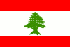

|
Länderinformationen Libanon
1. Das Wichtigste auf einen Blick2. Sehens- und Hörenswertes
3. Politik & Gesellschaft
4. Schmeckenswertes
5. Medien
6. Reisetipps
1. Wissenswertes
|  | Hier
haben wir die wichtigsten Zahlen und Fakten zum Libanon und der dort
gesprochenen Sprache zusammengetragen. |
 Die
arabische Sprache
Die
arabische Sprache
Die
offizielle Amtssprache und im Alltag verwendete Sprache im Libanon
ist (libanesisches) Arabisch. Dieser Dialekt des Arabischen ist eng
mit dem palästinensischen und syrischen Arabisch verwandt.Neben Arabisch werden im Libanon als Minderheitensprachen auch noch Aramäisch, Armenisch und Kurdisch gesprochen. Als Bildungs- und Verkehrssprache wird vielfach Französisch und in letzter Zeit auch zunehmend Englisch verwendet.
Das Arabische gehört zur afroasiatischen Sprachfamilie und wird in dieser Familie zu den semitischen Sprachen gezählt. Zu diesen gehört neben dem Hocharabischen und einer Vielzahl an arabischen Dialekten (beispielsweise Saudi-Arabisch, ägyptisches, marokkanisches und – nicht zuletzt – libanesisches Arabisch), auch das Hebräische, das Aramäische und verschiedene äthiopische Sprachen.
Die arabische Sprache wird hauptsächlich in Nordafrika und auf der arabischen Halbinsel gesprochen.
Arabisch ist eine der sechs offiziellen Amtssprachen der Vereinten Nationen (UN), neben Englisch, Französisch, Spanisch, Chinesisch und Russisch.
Die gesprochenen arabischen Sprachen (also die verschiedenen regionalen Dialekte) unterscheiden sich teilweise recht stark voneinander.
Was diese Regionalsprachen jedoch eint, ist ihre gemeinsame Schriftsprache –das Standardarabisch, das in der gesamten arabischen Welt nahezu einheitlich verwendet wird.
Rund 200 Millionen Menschen sprechen Arabisch als ihre Muttersprache. Hinzu kommen rund 10 Millionen Menschen, die es als Zweitsprache sprechen.
Arabisch ist aber auch – und das ist ein ganz zentraler Aspekt – die Sprache des Islam. Der Koran, die heilige Schrift dieser Weltreligion, wird traditionell in arabischer Schrift und Sprache gedruckt.
Wegen des Glaubens an die wortwörtliche Überlieferung der Worte Gottes, gilt jedes Zeichen, jedes Wort und jeder Satz als heilig und unantastbar. Zwar existieren Übersetzungen des Koran in die meisten Sprachen, jedoch gilt die Schrift nur im arabischen Original als exakt das wiedergebend, was offenbart wurde. So darf der Koran auch nur auf Arabisch rezitiert werden, um Fehler in Übersetzungen zu vermeiden und die wortwörtliche Überlieferung der Botschaft wiederzugeben.
Der Islam ist die Religion von rund 1,3 Milliarden Menschen weltweit. Für fromme Muslime gilt es – wie erläutert – als religiöse Tat und bringt hohes Prestige, den Koran im Original zu studieren. So können viele Muslime (zumindest grundlegend) die arabische Sprache lesen. Auch gilt es als besondere religiöse Ehre, den Koran (oder zumindest Teile hiervon) auswendig vortragen zu können. Gerade die prosaische Sprache, die im Koran Verwendung findet, kann zudem nur im arabischen Original in all ihren Facetten wiedergegeben werden. Bei Übersetzungen in andere Sprachen geht dieser sprachliche Reiz meist verloren.
Dies zeigt erneut, welche Bedeutung die arabische Sprache weltweit hat.
Der Koran ist zudem das Kriterium bei grammatikalischen, orthographischen oder sprachlichen Fragen zum Arabischen.
 Das
arabische Alphabet
Das
arabische Alphabet
Bitte beachten Sie, dass im Arabischen von rechts nach links geschrieben und gelesen wird. Nach unserem Leseverständnis wird deshalb ein Buch „hinten“ begonnen.
Die arabischen Buchstaben verändern ihre Form, je nachdem in welcher Stellung sie in einem Wort stehen, ob als isolierte Buchstaben, am Wortanfang, in der Mitte oder am Ende. Daher finden Sie in dieser Tabelle alle Buchstaben in ihren unterschiedlichen Ausprägungen.
Die Aussprache
der arabischen Buchstaben
|
||||
Name des Buchstabens
|
Umschrift
|
Arabischer Buchstabe
|
Beschreibung
der Aussprache
(nach Möglichkeit mit
Beispielen aus dem Deutschen)
|
Beispiel aus dem Arabischen
|
Hamza
|
Þa,
Þi, Þu
|
ء
|
Stimmloser
Verschlusslaut, wie vor
a
in alt, i
in
ist, u
in unser
|
أسد:
Þasad (Löwe)
إسلام:
Þislām (Islam)
أم:
Þumm (Mutter)
|
Alif
|
ā
|
ا
|
Langer,
offener Vokal, meist wie a
in Bahn
|
مال:
māl
(Geld)
|
Bā
|
b
|
ب
|
Stimmhaftes
b,
wie in bunt, Bach
|
باب:
bāb
(Tür)
|
Tā
|
t
|
ت
|
Stimmloses
t,
wie in Tasse, Tisch
|
تمر:
tamr (Dattel)
|
Thā
|
t
|
ث
|
Stimmloser
Verschlusslaut, wie englisches „th“
in throw, three
|
ثور:
tawr (Ochse)
|
Dschīm
|
ğ
|
ج
|
Stimmhafter
Verschluss-Reibelaut, wie englisches „g“
oder „j“
in gentleman oder jolly
|
جمل:
ğamal
(Kamel)
|
Hā
|
Î
|
ح
|
kräftig
gehauchtes h
|
حمار:
Îimār
(Esel)
|
Chā
|
Ì
|
خ
|
Stimmloser Reibelaut, wie ch
in Tuch, machen
|
خير:
Ìair
(Güte)
|
Dāl
|
d
|
د
|
Stimmhafter Verschlusslaut,
wie d
in Dach, danke
|
دب:
dubb
(Bär)
|
Dhāl
|
Æ
|
ذ
|
Stimmhafter Verschlusslaut,
wie englisches „th“
in the, there, father
|
ذهب:
Æahab
(Gold)
|
Rā
|
r
|
ر
|
Stimmhaftes Zungen-r,
wie (mundartlich) in Rasen, Riese
|
ريح:
rīÎ
(Wind)
|
Zāin
|
z
|
ز
|
Stimmhafter Reibelaut, wie s
in suchen, sind, Sache
|
زهرة:
zahrah
(Blume)
|
Sīn
|
s
|
س
|
Stimmloser Reibelaut, wie s
in Rast, Risse
|
سلام:
salām
(Friede)
|
Schīn
|
š
|
ش
|
Stimmloser Zischlaut, wie sch
in schade, Schale,
schieben
|
شمس:
šams
(Sonne)
|
Sād
|
Ò
|
ص
|
emphatisches
stimmloses s
wie
sun im Englischen
|
صحراء:
ÒaÎrāÞ
(Wüste)
|
Dād
|
Ã
|
ض
|
emphatisches
stimmhaftes d
|
ضحك:
ÃaÎik
(Lachen)
|
Tā
|
Ô
|
ط
|
emphatisches
stimmloses t
|
طائرة:
ÔāÞirah
(Flugzeug)
|
Zā
|
Û
|
ظ
|
emphatisches
stimmhaftes Æ
|
ظهر:
Ûahr
(Rücken)
|
ÝAin
|
Ý
|
ع
|
gepreßter
Kehllaut
|
عرب:Ýarab
Araber
|
Ghain
|
ġ
|
غ
|
Zäpfen-r,
wie in (hochdeutsch) Rasen, Riese
|
غرب:
ġarb
(Westen)
|
Fā
|
f
|
ف
|
Stimmloser Reibelaut, wie f
in Fähre,
faul
|
فرس:
faras
(Stute)
|
Qaf
|
q
|
ق
|
emphatisches
stimmloses k
|
قرد:
qird
(Affe)
|
Kāf
|
k
|
ك
|
Stimmloser Verschlusslaut, wie
k
in Kiste, Korn
|
كرة:
kurah
(Ball)
|
Lām
|
l
|
ل
|
Stimmhafter Laterallaut, wie l
in Liebe, landen
|
لحم:
laÎm
(Fleisch)
|
Mīm
|
m
|
م
|
Stimmhafter Nasallaut, wie m
in Maus, Minze
|
إمرأة:
ÞimrarÞah
(Frau)
|
Nūn
|
n
|
ن
|
Stimmhafter Nasallaut, wie n
in Nase, neu
|
نور:
nūr
(Licht)
|
Hā
|
h
|
ه
|
Stimmloser Hauchlaut, wie h
in hasten, Hund
|
هبة:
hibah
(Geschenk)
|
Wāw
|
w,
ū, u
|
و
|
Stimmhafter Reibelaut, wie
englisches w
in word, want, with
|
وردة:
wardah
(Rose)
|
Yā
|
y,
ī, i
|
ي
|
Stimmhafter, langer Vokal, wie
i
in Biene, wieder
|
يوم:
yawm
(Tag)
|
Ta marbuta
|
(t)
|
ة
|
Ist bei isolierten Wörtern
stumm, wird nur bei Genitivkonstruktionen als
t ausgesprochen
|
فتاة:
fatāh
(Mädchen)
|
Nun aber zum Libanon. Sie finden im folgenden Abschnitt interessante Fakten und landestypische Informationen.
 Einwohner
Einwohner
Der Libanon hat rund 3,9 Millionen Einwohner. Davon sind 95 Prozent Araber, vier Prozent Armenier sowie ein Prozent Angehörige anderer ethnischer Gruppen (beispielsweise Kurden). Viele christliche Libanesen, die etwa 39 Prozent der Bevölkerung ausmachen, bevorzugen als Eigenbezeichnung nicht den Begriff Araber sondern nennen sich Phönizier.
Mehrere Millionen Menschen mit libanesischer Abstammung leben zudem im Ausland, ihre Zahl wird weltweit auf rund 10 Millionen geschätzt.
Das Durchschnittsalter der Bevölkerung liegt bei rund 28 Jahren und ist damit deutlich niedriger als beispielsweise in Deutschland, wo das Mittel bei knapp 43 Jahren ist. Die durchschnittliche Lebenserwartung liegt im Libanon bei rund 73 Jahren und ist damit knapp sechs Jahre niedriger als in Deutschland.
 Fläche
Fläche
Das Staatsgebiet des Libanon umfasst eine Fläche von knapp 10.500 km² und ist damit flächenmäßig in etwa halb so groß wie das Bundesland Hessen.
Im Süden hat das Land eine knapp 80 km lange Grenze zu Israel und im Osten und Norden grenzt Syrien auf einer Länge von 375 km an den Libanon. Die Westgrenze markiert das Mittelmeer: die libanesische Küste umfasst rund 225 km.
 Währung
Währung
Im Libanon zahlt man mit dem Libanesischen Pfund. Ein Pfund ist unterteilt in 100 Piaster. Einen aktuellen Wechselkurs von Libanesischem Pfund zu Euro können wir Ihnen an dieser Stelle freilich nicht bieten, dieser lässt sich jedoch im Internet mit wenig Aufwand bequem recherchieren (geben Sie einfach bei einer Suchmaschine den Begriff „Währungsrechner“ ein). Ansonsten können Sie den aktuellen Kurs natürlich auch bei Ihrer Bank erfragen.
Als Zweitwährung wird im Libanon auch häufig der US-amerikanische Dollar verwendet, mit dem Sie auch vielerorts problemlos zahlen können.
 Ökonomische
Situation
Ökonomische
Situation
Der libanesische Bürgerkrieg (1975-90) hat große volkswirtschaftliche Schäden hinterlassen, die auch bis heute noch deutlich spürbar sind. Zwar wurden seitdem große Anstrengungen unternommen, die Wirtschaft wieder anzukurbeln und das Land wieder zu einem zentralen Umschlagplatz für den Warenverkehr und als wichtiges Banken- und Finanzzentrum des Nahen Ostens wiederzubeleben, von der ökonomischen Bedeutung, die der Libanon vor dem Krieg hatte, ist er noch weit entfernt. Zudem wurden bei dem jüngsten Krieg zwischen der libanesischen Hisbollah-Miliz und der israelischen Armee im Sommer 2006 erneut große Schäden an der Infrastruktur hinterlassen.
Die wichtigsten Wirtschaftszweige des Landes sind Tourismus, Landwirtschaft, Bankenwesen, Edelsteinverarbeitung, Ölraffinerie, Metall- und Möbelindustrie sowie die Verarbeitung von Chemikalien und Mineralien.
Die libanesische Landwirtschaft produziert vorwiegend Äpfel, Trauben, Zitrusfrüchte, Tomaten, Kartoffeln, Oliven und Tabak. In der Viehzucht werden vornehmlich Schafe und Ziegen gehalten.
Hauptexportgüter des Libanon sind Nahrungsmittel, Tabak, Schmuck, Chemikalien, Maschinen und Metallprodukte.
Die wichtigsten Handelspartner des Libanon sind das Nachbarland Syrien, die Vereinigten Arabischen Emirate, Saudi Arabien, europäische Staaten wie Deutschland, Italien und Frankreich sowie die USA.
Die Arbeitslosenquote beträgt heute etwa 20 Prozent und fast ein Drittel der Bevölkerung lebt unterhalb der Armutsgrenze.
 Zeitzone
Zeitzone
Libanon liegt in einer anderen Zeitzone als Österreich, Deutschland und die Schweiz. Der Zeitunterschied beträgt plus eine Stunde.
Ein anschauliches Beispiel: Wenn es bei Ihnen in München 12 Uhr mittags ist, zeigt die Uhr in Beirut bereits 13 Uhr.
Im Libanon wird im Sommer ebenfalls auf Sommerzeit umgestellt, so dass der Zeitunterschied immer gleich bleibt.
Im nächsten Kapitel haben wir einige ausgesuchte Reiseempfehlungen zusammengestellt.